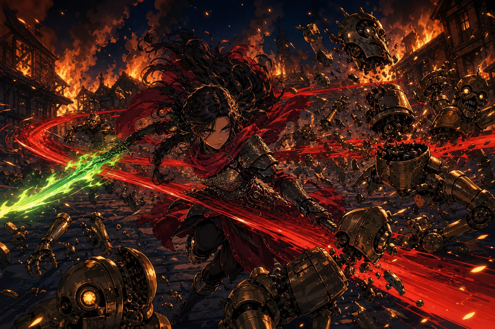
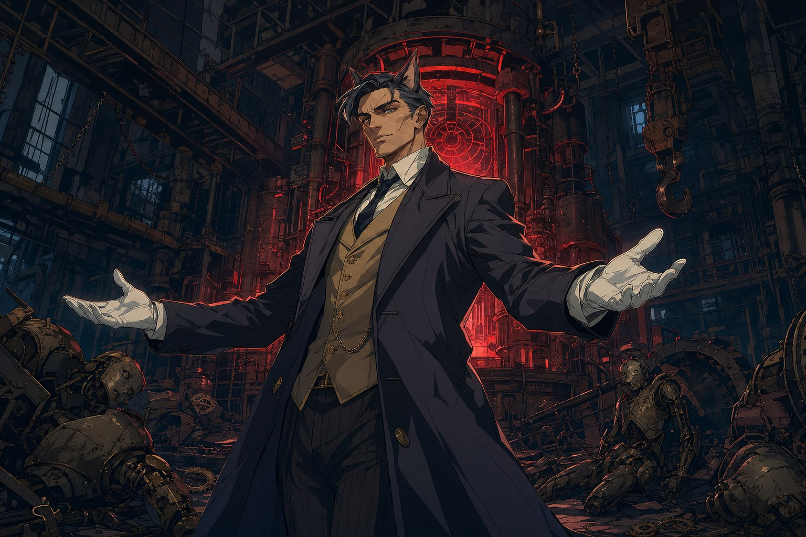

기계 에일라가 손짓했다. “언니. 함께 가요.” 에일라는 잠깐 생각하더니 답했다. “알겠어요. 당신이 원한다면.” 그때 잔해에 파묻혀 있던 세틀러가 핏기 어린 기침을 뱉으며 소리쳤다. “반대한다!” 일어서려던 그는 삽자루 기계인형에게 복부를 맞고 무릎을 꿇었다. 기계 에일라가 “네 의견 따위 아무도 묻지 않았는데?” 하고 화를 냈지만, 세틀러는 물러서지 않았다. “다시는 기계 따위에게 동료를 빼앗기지 않겠어. 에일라를 데리고 도망쳐!” 에일라가 자신이 선택한 것이라 말해도 소용없었다. “시끄러워! 네가 뭐라고 하든 널 구한다!” 기계 에일라가 깔깔 웃으며 시체를 더 늘리고 싶으냐고 비웃던 그 순간, 북동쪽에서 붉은 궤적이 고속으로 기계 인형들 사이를 가로질렀다.
초록빛으로 불타는 검이 스칠 때마다 인형들이 단숨에 베이고 박살나며 허공으로 튕겨나갔다. 사도 레이피어였다. 은빛 사붓한 바람은 인형의 팔을 타고 등 뒤에 달라붙어 목 뒤의 기계 심장을 부수며 그 약점을 알려주었다. 군단의 잔당들이 도착하자 전황이 뒤집혔고, 기계 에일라는 물러났다.
티게리아 강
불길이 번지고 건물이 무너질 것 같아, 그들은 마을 외곽의 옛 아지트로 자리를 옮겼다. 그리고 레이피어가, 그동안 조각조각 흩어져 있던 진실을 처음으로 하나의 이야기로 이어 들려주었다. 백스물아홉 해 전, 이미 국가적 유명인사이던 아르카딘이 ‘감정이 사라지는 병’에 걸린 열다섯 살 소녀 에일라를 샀다. 생활고에 지친 부모가 딸을 대마법사에게 팔아넘긴 것이다. 이듬해 연구실 폭발 사고가 났고, 면담을 기다리던 에일라는 불타는 소리를 듣고 뛰어들어 목숨을 걸고 아르카딘을 구했다. 그 대가로 두 다리를 잃었다.
아르카딘은 감정도 없는 네가 왜 날 구했느냐 물었고, 에일라는 이렇게 하면 조금이라도 잘해줄까 하는 계산이었다고 답했다. 아르카딘은 기가 막히다는 듯 웃었다. 그 후 몇 년간 그는 에일라를 딸처럼 대했다. 함께 식사하고, 지는 해를 보고, 서로 노래를 가르쳤다. 에일라는 노래가 기술일 뿐이라 했지만 아르카딘은 노래는 마음에서 나오는 것이라 했고, 에일라가 완전히 노래를 잃기 전에 기록해두고 싶다고 했다. 천문대에서 들었던 그 노래가 바로 그렇게 보존된 것이었다.
에일라가 더 감정을 잃고, 노래를 잃고, 기억마저 잃어가자 아르카딘은 다급해졌다. 손가락 하나를, 심장 혈관 하나를, 팔 하나를 기계로 바꾼다면 너는 네가 아니게 되는가. 두뇌와 심장은 어떤가. 뉴런 하나하나가 매일 조금씩 죽고 교체된다면. 알더마크의 티게리아 강물이 끊임없이 흐르며 그 물이 계속 바뀌어도 우리는 그것을 여전히 티게리아 강이라 부르는데. 아르카딘은 그런 물음 끝에, 기계 심장을 만드는 자신의 기술로 에일라의 몸을 심장과 두뇌까지 통째로 교체하기로 했다. 열이레에 걸쳐 먹지도 자지도 않고 마법으로 체력을 끌어다 쓰며 몰두한 끝에, 수술을 마치고 쓰러지려는 그를 갓 완성된 기계 인형이 일어나 감싸안았다. 새 이름을 지어줄 필요는 없었다. 그건 정말로 에일라였으니까. 모든 기억을 지녔고, 행복하게 눈물 흘렸고, 즐겁게 노래했다. “고마워요, 아르카딘. 당신이 나를 고쳐주었어요.”
남은 조각
레이피어가 무거운 얼굴로 말을 이었다. 아르카딘은 수술을 마치기 직전, 세라에게 한 가지 지시를 내렸다. 폐기. 에일라를 고치고 남은 조각들을. 에일라가 담담히 그 뜻을 받아 말했다. “기계 에일라가, 진짜 에일라군요. 저는 감정도 기억도 의지도 없는 남겨진 조각이에요.” 세틀러가 그럼 이 기계를 부수면 되지 않느냐고 소리쳤지만, 레이피어는 그렇게 간단하지 않다고 했다. 기계 에일라도 에일라이며, 그를 죽이는 것은 아마도 살인이라고. 기억도 감정도 연속성도 모두 갖춘 그를, 몸이 기계라는 이유만으로 부술 수는 없다고. 에일라조차 말했다. “기계 에일라는 저보다 더 에일라니까요.”
세틀러는 그런 논리를 받아들이지 못했다. “몰라, 그런 건 몰라! 네가 우리에게 식사를 만들어줬잖아! 날, 실반을 구해줬잖아! 네가 누구든 넌 내 친구야!” 은빛 사붓한 바람이 침착하게 짚었다. 기계 에일라는 기계 인형들을 이용해 마을을 불태우고 사람들을 죽였다고. 기계든 사람이든, 멈춰야 할 죄라고. 레이피어도 신중하게 인정했다. 그건 분명, 처벌받아야 할 죄라고.
심장각인기
레이피어는 부탁을 남겼다. 기계 에일라는 몇 번을 파괴해도 돌아올 것이라고. 아르카딘이 기계 심장에 인격과 기억을 각인하는 기술을 만들었고, 그것으로 실반 같은 존재가 얼마든지 다시 만들어질 수 있다고. 기계 심장은 계속 생산할 수 있지만, 각인을 하는 ‘심장각인기’는 오직 하나뿐이며 오직 아르카딘만이 만들 수 있었기에 다시 만들 수 없다고. 그것이 서쪽의 프렐로트 폐공장에 있으니, 파괴해달라고. 자신들은 대량의 기계 인형이 몰려간 브라에스 시를 지키겠다며, 레이피어는 하루에 한 번 소리를 전할 수 있는 공명석 하나를 세틀러에게 건넸다. 각인기를 파괴했을 때, 또는 파괴할 수 없게 되었을 때만 연락하라는 규칙과 함께. 떠나기 직전, 에일라가 기계 에일라의 목적을 물었다. 레이피어는 추측이라며 답했다. 인간의 감정은 시간에 풍화하지만, 기계의 감정은 어떨까. 지금 기계 에일라의 그 지치지 않는 감정과 관련이 있을 거라고.

프렐로트 폐공장
원래 물레방아나 이삭 수확기 같은 단순한 기계를 만들던 공장이었다. 그런데 인형을 대량으로 만들어내는 곳치고는 이상하리만치 비어 있었고, 이미 파괴된 인형들이 여기저기 뒹굴었다. 그 안쪽에서 팔릭스 그린벨트가 단정한 코트에 기름 한 방울 묻지 않은 장갑 차림으로 기다리고 있었다. “아 정말, 여기까지 왔네. 너희들. 이익을 거부하는 사람들이 있다는 건 알고 있는데, 너희들은 유독 심한 편이군.” 그는 에일라가 만들 세상이 그렇게 나빠 보이지 않는다며, 힘이 있는 자에겐 특히 그렇다며, 공장의 기계들을 작동시키고 공장 자체를 무너뜨려 각인기를 잔해 밑에 파묻으려 했다. 각인기가 부서지지 않은 채 잔해에 깔리기만 하면, 시간이 없는 그들이 손쓸 수 없게 된다는 것을 팔릭스는 알고 있었다.
폭파 카운트가 돌아가고 각인기 안으로 무언가 가루가 뿌려져 공장 전체의 기계들이 격한 감정에 휩싸이는 가운데, 세 사람은 팔릭스의 조롱을 뚫고 마침내 심장각인기를 파괴했다. 오직 아르카딘만이 만들 수 있었던, 다시는 만들어질 수 없는 그 장치를. 이제 기계 에일라는 자신을 복제할 방법을 잃었다.
그때 세틀러의 짐 속에서 공명석이 빛나기 시작했다. 규칙을 어긴 연락이었다. 그러나 흘러나온 것은 잔당의 목소리가 아니라, 온 도시에 울려 퍼지는 메이퀸의 방송이었다. “브라에스 시민 여러분, 축제의 밤이 다시 찾아왔습니다. 모두의 안녕과 화합을 위하여, 한 사람도 빠지지 않고 광장으로 모여주세요.” 처음 이 모든 일이 시작되었던 그 도시에서, 두 번째 축제가 열리려 하고 있었다. 마지막 대치를 앞두고, 그 밤이 그렇게 저물었다.